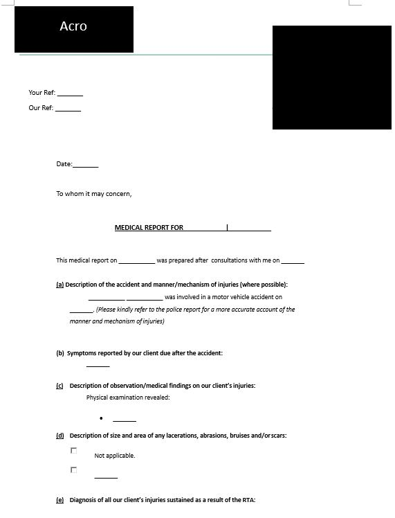
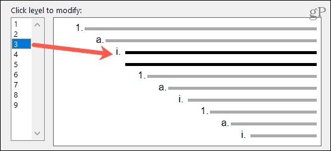

This lights maintenance dashboard was created purely using Excel including VBA and allows the user to see the status of all lights in a building at a glance, with a table of repair statuses linked to a blueprint diagram

This template was created for a client who required a word document template with the following requirements:
- Different templates for different companies
- Pre-filled fields at the appropriate locations within the template
- Only allows users to fill in at selected areas within the template

This template was created for a client who required a word document template with the following requirements:
- Proper formatting of the headers and bullet points
- Creation of Table of Contents and List of Figures

This Excel Project extracts data from 2 Excel files in 2 separate subfolders using Power Query where:
- The Power Query engine will use the latest file within the specified subfolders regardless of the filename